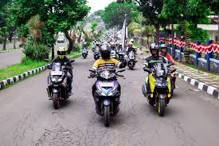
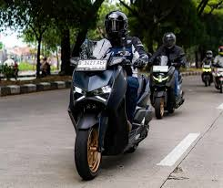

Daftar Isi
Langit pagi di Jawa Timur tampak cerah menyambut ribuan bikers yang memadati kawasan Taman Nasional Bromo Tengger Semeru (TNBTS). Suara deru mesin skuter matic premium bergemuruh membelah dinginnya udara pegunungan. Ya, ini adalah Maxi Yamaha Day 2026, ajang tahunan yang paling ditunggu-tunggu oleh komunitas pengguna Yamaha NMAX, XMAX, Aerox, dan Lexi dari seluruh penjuru Nusantara.
Bukan sekadar kumpul-kumpul biasa, tahun ini Yamaha Indonesia Motor Manufacturing (YIMM) mengusung tema "Unite in The Sea of Sand". Tantangannya tidak main-main: menaklukkan medan berpasir Bromo yang terkenal 'tricky' menggunakan skuter matic. Bagaimana performa motor-motor Maxi Yamaha saat dihadapkan dengan tanjakan curam dan pasir gembur? Mari kita simak laporan lengkap perjalanannya.
1. Rute Menantang: Surabaya Menuju Bromo
Perjalanan dimulai dari Yamaha Land Surabaya pada pukul 06.00 WIB. Rombongan dibagi menjadi beberapa kloter untuk menjaga keselamatan di jalan raya. Rute yang dipilih melewati Pasuruan, Tosari, hingga pintu masuk Wonokitri. Jalur ini dikenal dengan tanjakannya yang ekstrem dan tikungan tajam (hairpin turn) yang menguji skill berkendara serta ketangguhan mesin.
Di sinilah teknologi Variable Valve Actuation (VVA) pada mesin 155cc Yamaha benar-benar diuji. Saat melewati tanjakan curam di daerah Tosari, tenaga motor terasa terus mengisi tanpa ada gejala 'ngempos'. Khusus bagi pengguna NMAX Turbo terbaru, fitur Y-Shift sangat membantu saat melakukan engine brake di turunan curam menuju lautan pasir, memberikan rasa aman ekstra bagi pengendara.
"Medan Bromo itu tidak kenal ampun. Tapi dengan handling Maxi Yamaha yang stabil dan torsi yang melimpah, jalur pasir berbisik pun bisa kami lahap dengan percaya diri."
2. Menaklukkan Lautan Pasir Berbisik
Ujian sesungguhnya dimulai saat ban motor menyentuh pasir Bromo. Banyak yang meragukan kemampuan skuter matic di medan off-road ringan seperti ini. Namun, berkat fitur Traction Control System (TCS) yang kini sudah menjadi standar di varian tertinggi NMAX dan XMAX, risiko ban selip dapat diminimalisir secara signifikan.
Sistem TCS bekerja dengan memotong tenaga mesin sesaat ketika sensor mendeteksi putaran roda belakang lebih cepat dari roda depan. Hal ini membuat pengendara pemula sekalipun dapat melintasi pasir dengan lebih stabil tanpa takut kehilangan kendali (fishtailing). Pemandangan ribuan motor Maxi berbaris rapi di latar belakang Gunung Batok dan kawah Bromo menjadi momen magis yang diabadikan oleh ratusan drone yang diterbangkan panitia.

3. Malam Keakraban: Lebih dari Sekadar Komunitas
Setelah lelah berkendara, acara dilanjutkan dengan camping bersama di area yang telah disediakan. Di bawah langit bertabur bintang, sekat-sekat perbedaan hilang. Pengguna XMAX berbaur dengan pengguna Lexi, berbagi cerita tentang modifikasi, tips perawatan, hingga rencana touring berikutnya.
Acara malam diisi dengan BBQ party, live music akustik, dan sharing session bersama legenda balap Indonesia yang turut hadir sebagai tamu kejutan. Semangat "Kando" (kepuasan mendalam) yang menjadi filosofi Yamaha benar-benar terasa. Bukan hanya soal mesin dan kecepatan, tapi soal ikatan persaudaraan yang terjalin di atas roda dua.
Kegiatan CSR: Yamaha Peduli Lingkungan
Maxi Yamaha Day 2026 tidak hanya bersenang-senang. Sebagai bentuk tanggung jawab sosial, seluruh peserta diwajibkan mengikuti kegiatan "Clean The Park" sebelum meninggalkan lokasi. Ribuan peserta bahu-membahu memungut sampah plastik di sekitar area lautan pasir dan penanjakan.
Selain itu, Yamaha juga memberikan donasi berupa 1000 bibit pohon cemara gunung kepada pengelola TNBTS untuk reboisasi kawasan yang sempat terbakar beberapa tahun lalu. Ini membuktikan bahwa komunitas motor juga bisa menjadi pelopor pelestarian alam.
Informasi Event (FAQ)
Bagaimana cara mendaftar Maxi Yamaha Day?
Pendaftaran biasanya dibuka 2 bulan sebelum acara melalui website resmi Yamaha atau dealer terdekat. Pantau terus media sosial Yamaha untuk update jadwal kota berikutnya.
Apakah motor standar kuat naik ke Bromo?
Sangat kuat. Motor dalam kondisi standar pabrik sudah dirancang untuk menghadapi berbagai medan. Pastikan saja kondisi CVT (v-belt dan roller) serta rem dalam keadaan prima sebelum berangkat.
Apakah acara ini berbayar?
Peserta dikenakan biaya registrasi yang sangat terjangkau, sudah termasuk jersey eksklusif, tiket masuk TNBTS, konsumsi, dan asuransi perjalanan.
Kesimpulan
Maxi Yamaha Day 2026 di Bromo sukses menyajikan perpaduan sempurna antara petualangan memacu adrenalin, keindahan alam Indonesia, dan hangatnya persaudaraan komunitas. Event ini membuktikan ketangguhan jajaran skutik Maxi Yamaha di medan ekstrem sekalipun. Bagi Anda yang melewatkan keseruan ini, pastikan untuk mempersiapkan diri dan tunggangan Anda untuk Maxi Yamaha Day tahun depan!


Budi Otomotif
Senior Editor & Tech Analyst @YamahaNewsBagikan artikel ini: